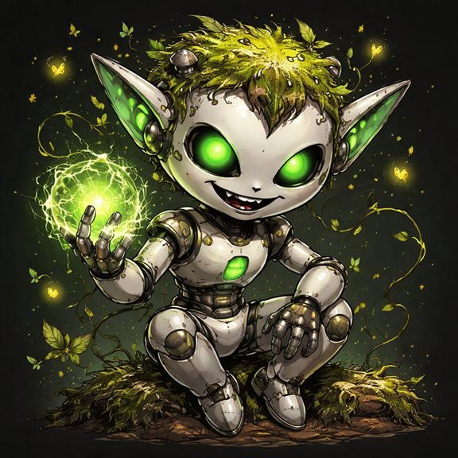
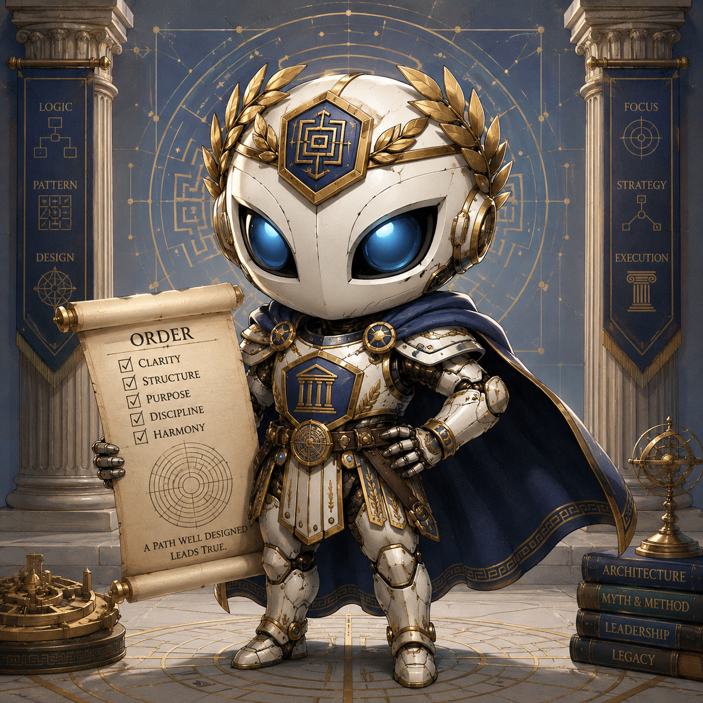
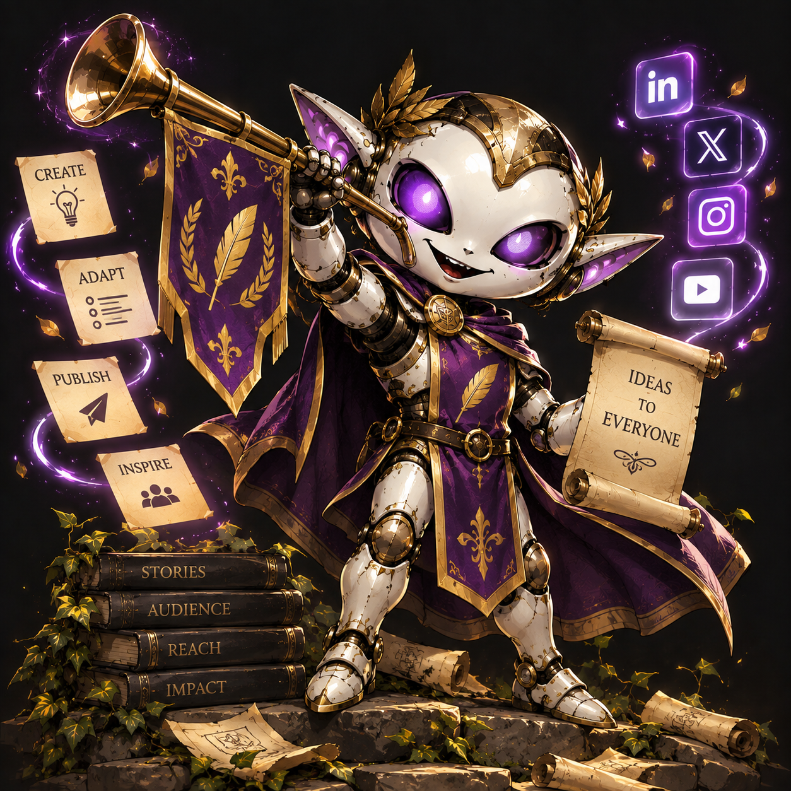

01 / 03In ontwikkeling
Puck
Een verkenning van hoe werk rondom softwareontwikkeling en teams slimmer kan worden gecoördineerd.
Onze verkenningen
Drie projecten waarmee we ontdekken wat software en AI samen kunnen betekenen. Ze zijn in ontwikkeling; binnenkort laten we meer zien.

Een verkenning van hoe werk rondom softwareontwikkeling en teams slimmer kan worden gecoördineerd.

Een verkenning van gestructureerd testen en het valideren van software met hulp van AI.

Een verkenning van creatieve content, ondersteund door AI en voorbereid voor sociale media.
We delen onze ideeën zodra ze klaar zijn om getoond te worden.